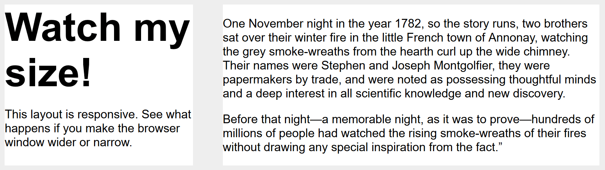

Responsive design
Responsive web design (RWD) is a web design approach to make web pages render well on all screen sizes and resolutions while ensuring good usability. It is the way to design for a multi-device web. In this article, we'll help you understand some techniques that can be used to master it.
| Prerequisites: | HTML basics (study Introduction to HTML), and an idea of how CSS works (study CSS first steps and CSS building blocks.) |
|---|---|
| Objective: | To understand the fundamental purposed and CSS features used to implement responsive designs. |
Precursor to responsive design: mobile web design
Before responsive web design became the standard approach for making websites work across different device types, web developers used to talk about mobile web design, mobile web development, or sometimes, mobile-friendly design. These are basically the same as responsive web design — the goals are to make sure that websites work well across devices with different physical attributes (screen size, resolution) in terms of layout, content (text and media), and performance.
The difference is mainly to do with the devices involved, and the technologies available to create solutions:
- We used to talk about desktop or mobile, but now there are many different types of device available such as desktop, laptop, mobile, tablets, watches, etc. Instead of catering for a few different screen sizes, we now need to design sites defensively to cater for common screen sizes and resolutions, plus unknowns.
- Mobile devices used to be low-powered in terms of CPU/GPU and available bandwidth. Some didn't support CSS or even HTML, and as a result, it was common to perform server-side browser sniffing to determine device/browser type before then serving a site that the device would be able to cope with. Mobile devices often had really simple, basic experiences served to them because it was all they could handle. These days, mobile devices are able to handle the same technologies as desktop computers, so such techniques are less common.
- You should still use the techniques discussed in this article to serve mobile users a suitable experience, as there are still constraints such as battery life and bandwidth to worry about.
- User experience is also a concern. A mobile user of a travel site might just want to check flight times and delay information, for example, and not be presented with a 3D animated globe showing flight paths and your company history. This can be handled using responsive design techniques, however.
- Modern technologies are much better for creating responsive experiences. For example, responsive images/media technologies now allow appropriate media to be served to different devices without having to rely on techniques like server-side sniffing.
Introducing responsive web design
HTML is fundamentally responsive, or fluid. If you create a web page containing only HTML, with no CSS, and resize the window, the browser will automatically reflow the text to fit the viewport.
While the default responsive behavior may sound like no solution is needed, long lines of text displayed full screen on a wide monitor can be difficult to read. If wide screen line length is reduced with CSS, such as by creating columns or adding significant padding, the site may look squashed for the user who narrows their browser window or opens the site on a mobile device.

Creating a non-resizable web page by setting a fixed width doesn't work either; that leads to scroll bars on narrow devices and too much empty space on wide screens.
Responsive web design, or RWD, is a design approach that addresses the range of devices and device sizes, enabling automatic adaption to the screen, whether the content is viewed on a tablet, phone, television, or watch.
Responsive web design isn't a separate technology — it is an approach. It is a term used to describe a set of best practices used to create a layout that can respond to any device being used to view the content.
The term responsive design, coined by Ethan Marcotte in 2010, described using fluid grids, fluid images, and media queries to create responsive content, as discussed in Zoe Mickley Gillenwater's book Flexible Web Design.
At the time, the recommendation was to use CSS float for layout and media queries to query the browser width, creating layouts for different breakpoints. Fluid images are set to not exceed the width of their container; they have their max-width property set to 100%. Fluid images scale down when their containing column narrows but do not grow larger than their intrinsic size when the column grows. This enables an image to scale down to fit its content, rather than overflow it, but not grow larger and become pixelated if the container becomes wider than the image.
Modern CSS layout methods are inherently responsive, and, since the publication of Gillenwater's book and Marcotte's article, we have a multitude of features built into the web platform to make designing responsive sites easier.
The rest of this article will point you to the various web platform features you might want to use when creating a responsive site.
Media Queries
Media queries allow us to run a series of tests (e.g. whether the user's screen is greater than a certain width, or a certain resolution) and apply CSS selectively to style the page appropriately for the user's needs.
For example, the following media query tests to see if the current web page is being displayed as screen media (therefore not a printed document) and the viewport is at least 80rem wide. The CSS for the .container selector will only be applied if these two things are true.
@media screen and (min-width: 80rem) {
.container {
margin: 1em 2em;
}
}
You can add multiple media queries within a stylesheet, tweaking your whole layout or parts of it to best suit the various screen sizes. The points at which a media query is introduced, and the layout changed, are known as breakpoints.
A common approach when using Media Queries is to create a simple single-column layout for narrow-screen devices (e.g. mobile phones), then check for wider screens and implement a multiple-column layout when you know that you have enough screen width to handle it. Designing for mobile first is known as mobile first design.
If using breakpoints, best practices encourage defining media query breakpoints with relative units rather than absolute sizes of an individual device.
There are different approaches to the styles defined within a media query block; ranging from using media queries to <link> style sheets based on browser size ranges to only including custom properties variables to store values associated with each breakpoint.
Find out more in the MDN documentation for Media Queries.
Media queries can help with RWD, but are not a requirement. Flexible grids, relative units, and minimum and maximum unit values can be used without queries.
Responsive layout technologies
Responsive sites are built on flexible grids, meaning you don't need to target every possible device size with pixel perfect layouts.
By using a flexible grid, you can change a feature or add in a breakpoint and change the design at the point where the content starts to look bad. For example, to ensure line lengths don't become unreadably long as the screen size increases you can use columns; if a box becomes squashed with two words on each line as it narrows you can set a breakpoint.
Several layout methods, including Multiple-column layout, Flexbox, and Grid are responsive by default. They all assume that you are trying to create a flexible grid and give you easier ways to do so.
Multicol
With multicol, you specify a column-count to indicate the maximum number of columns you want your content to be split into. The browser then works out the size of these, a size that will change according to the screen size.
.container {
column-count: 3;
}
If you instead specify a column-width, you are specifying a minimum width. The browser will create as many columns of that width as will comfortably fit into the container, then share out the remaining space between all the columns. Therefore the number of columns will change according to how much space there is.
.container {
column-width: 10em;
}
You can use the columns shorthand to provide a maximum number of columns and a minimum column width. This can ensure line lengths don't become unreadably long as the screen size increases or too narrow as the screen size decreases.
Flexbox
In flexbox, flex items shrink or grow, distributing space between the items according to the space in their container. By changing the values for flex-grow and flex-shrink you can indicate how you want the items to behave when they encounter more or less space around them.
In the example below the flex items will each take an equal amount of space in the flex container, using the shorthand of flex: 1 as described in the layout topic Flexbox: Flexible sizing of flex items.
.container {
display: flex;
}
.item {
flex: 1;
}
Note: As an example, we have built a simple responsive layout above using flexbox. We use a breakpoint to switch to multiple columns when the screen grows, and limit the size of the main content with max-width: example, source code.
CSS grid
In CSS grid layout the fr unit allows the distribution of available space across grid tracks. The next example creates a grid container with three tracks sized at 1fr. This will create three column tracks, each taking one part of the available space in the container. You can find out more about this approach to create a grid in the Learn Layout grids topic, under Flexible grids with the fr unit.
.container {
display: grid;
grid-template-columns: 1fr 1fr 1fr;
}
Note: The grid layout version is even simpler as we can define the columns on the .wrapper: example, source code.
Responsive images/media
To ensure media is never larger than its responsive container, the following approach can be used:
img,
picture,
video {
max-width: 100%;
}
This scales media to ensure they never overflow their containers. Using a single large image and scaling it down to fit small devices wastes bandwidth by downloading images larger than what is needed.
Responsive Images, using the <picture> element and the <img> srcset and sizes attributes enables serving images targeted to the user's viewport and the device's resolution. For example, you can include a square image for mobile, but show the same scene as a landscape image on desktop.
The <picture> element enables providing multiple sizes along with "hints" (metadata that describes the screen size and resolution the image is best suited for), and the browser will choose the most appropriate image for each device, ensuring that a user will download an image size appropriate for the device they are using. Using <picture> along with max-width removes the need for sizing images with media queries. It enables targeting images with different aspect ratios to different viewport sizes.
You can also art direct images used at different sizes, thus providing a different crop or completely different image to different screen sizes.
You can find a detailed guide to Responsive Images in the Learn HTML section here on MDN.
Other useful tips:
- Always make sure to use an appropriate image format for your website images (such as PNG or JPG), and make sure to optimize the file size using a graphics editor before you put them on your website.
- You can make use of CSS features like gradients and shadows to implement visual effects without using images.
- You can use media queries inside the media attribute on
<source>elements nested inside<video>/<audio>elements to serve video/audio files as appropriate for different devices (responsive video/audio).
Responsive typography
Responsive typography describes changing font sizes within media queries or using viewport units to reflect lesser or greater amounts of screen real estate.
Using media queries for responsive typography
In this example, we want to set our level 1 heading to be 4rem, meaning it will be four times our base font size. That's a really large heading! We only want this jumbo heading on larger screen sizes, therefore we first create a smaller heading then use media queries to overwrite it with the larger size if we know that the user has a screen size of at least 1200px.
html {
font-size: 1em;
}
h1 {
font-size: 2rem;
}
@media (min-width: 1200px) {
h1 {
font-size: 4rem;
}
}
We have edited our responsive grid example above to also include responsive type using the method outlined. You can see how the heading switches sizes as the layout goes to the two column version.
On mobile the heading is smaller:

On desktop, however, we see the larger heading size:

Note: See this example in action: example, source code.
As this approach to typography shows, you do not need to restrict media queries to only changing the layout of the page. They can be used to tweak any element to make it more usable or attractive at alternate screen sizes.
Using viewport units for responsive typography
Viewport units vw can also be used to enable responsive typography, without the need for setting breakpoints with media queries. 1vw is equal to one percent of the viewport width, meaning that if you set your font size using vw, it will always relate to the size of the viewport.
h1 {
font-size: 6vw;
}
The problem with doing the above is that the user loses the ability to zoom any text set using the vw unit, as that text is always related to the size of the viewport. Therefore you should never set text using viewport units alone.
There is a solution, and it involves using calc(). If you add the vw unit to a value set using a fixed size such as ems or rems then the text will still be zoomable. Essentially, the vw unit adds on top of that zoomed value:
h1 {
font-size: calc(1.5rem + 3vw);
}
This means that we only need to specify the font size for the heading once, rather than set it up for mobile and redefine it in the media queries. The font then gradually increases as you increase the size of the viewport.
Note: See an example of this in action: example, source code.
The viewport meta tag
If you look at the HTML source of a responsive page, you will usually see the following <meta> tag in the <head> of the document.
<meta name="viewport" content="width=device-width,initial-scale=1" />
This viewport meta tag tells mobile browsers that they should set the width of the viewport to the device width, and scale the document to 100% of its intended size, which shows the document at the mobile-optimized size that you intended.
Why is this needed? Because mobile browsers tend to lie about their viewport width.
This meta tag exists because when smartphones first arrived, most sites were not mobile optimized. The mobile browser would, therefore, set the viewport width to 980 pixels, render the page at that width, and show the result as a zoomed-out version of the desktop layout. Users could zoom in and pan around the website to view the bits they were interested in, but it looked bad.
By setting width=device-width you are overriding a mobile device's default, like Apple's default width=980px, with the actual width of the device. Without it, your responsive design with breakpoints and media queries may not work as intended on mobile browsers. If you've got a narrow screen layout that kicks in at 480px viewport width or less, but the device is saying it is 980px wide, that user will not see your narrow screen layout.
So you should always include the viewport meta tag in the head of your documents.
Summary
Responsive design refers to a site or application design that responds to the environment in which it is viewed. It encompasses a number of CSS and HTML features and techniques and is now essentially just how we build websites by default. Consider the sites that you visit on your phone — it is probably fairly unusual to come across a site that is the desktop version scaled down, or where you need to scroll sideways to find things. This is because the web has moved to this approach of designing responsively.
It has also become much easier to achieve responsive designs with the help of the layout methods you have learned in these lessons. If you are new to web development today you have many more tools at your disposal than in the early days of responsive design. It is therefore worth checking the age of any materials you are using. While the historical articles are still useful, modern use of CSS and HTML makes it far easier to create elegant and useful designs, no matter what device your visitor views the site with.
See also
- Working with touchscreen devices:
- Touch events provide the ability to interpret finger (or stylus) activity on touch screens or trackpads, enabling quality support for complex touch-based user interfaces.
- Use the pointer or any-pointer media queries to load different CSS on touch-enabled devices.
- CSS-Tricks guide to media queries